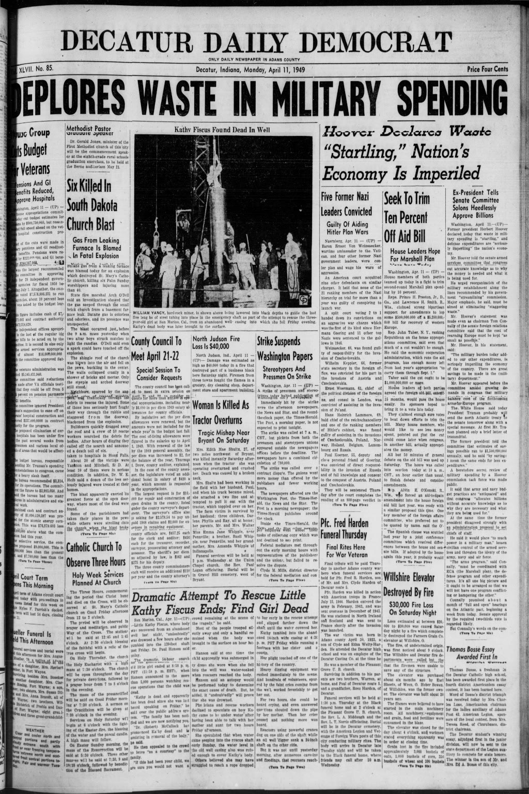

HN-574: Kathy Fiscus recovery confirms rescue failed
HN-574 · April 11, 1949 · Disasters, Accidents & Emergencies > Rescues, Evacuations & Emergency Response > Search and rescue

page image (archive tiles)Recorded finding
Discovery narrative
Source: Decatur Daily Democrat, p. 1 — original page.
Report: The issue reported that Kathy's body had been brought to the surface following attempts to reach her through an adjacent shaft.
Assessment: This documented outcome corrects the unresolved rescue hopes in
Original archive images (4)
Authentic images retrieved from Hoosier State Chronicles (Indiana State Library), Southwest Collection (Texas Tech University) and Historic Oregon Newspapers (University of Oregon). Article crops are located using the archive's own OCR word coordinates and rendered at native crop resolution; article clips are assembled from the archive's own article-block images; page images marked "archive tiles" are stitched from the archive's own tiled page service at its 256-px tile cap; page images marked "issue PDF" are single pages rasterised from the archive's own issue PDF, with the page chosen by matching the headline against the PDF's text layer; page scans are reduced-size access renditions. No images were generated, mocked, or retouched.

Hoosier State Chronicles (Indiana State Library)
Open larger view · Archive viewer (full resolution)

Southwest Collection (Texas Tech University)
Open larger view · Archive viewer (full resolution)

Historic Oregon Newspapers (University of Oregon)
Open larger view · Archive viewer (full resolution)

Historic Oregon Newspapers (University of Oregon)
Open larger view · Archive viewer (full resolution)
Source acquisition
Status: Archive images acquired
Authentic archive-owned image renditions were retrieved for this record and are displayed above. The source-acquisition manifest preserves the original pre-acquisition feasibility assessment.
Original seed
URL (preserved verbatim): https://newspapers.library.in.gov/?a=d&d=DCDD19490411.1.1
Saved research report: Historical_Newspaper_Event_Research_553-577_2026-10-23.md
Evidence note: A newspaper report means a historical publication made a claim; it does not establish that claim as fact. Contemporary reporting is separated from later scholarly context and our own assessment.